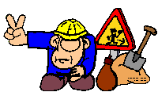

Voici la photo avec la pire qualité que j'ai trouvé

Cris Rojas
Yo, ✊
Développeur iOS et passionné de l'intégration web, l'UI et UX
Voici la photo avec la pire qualité que j'ai trouvé
Cris Rojas
Yo, ✊
Développeur iOS et passionné de l'intégration web, l'UI et UX
Je suis passionné des bonnes UI et de la confiture de lait, je dessine, écrit du code, et chant sous la douche sans aucune compassion ni remord en vers mes voisins. J'ai toujours eu le désir de construire des choses dont les gens puissent tomber amoureux. Aussi, j'ai l'air intelligent mais c'est à cause des lunettes.
Un peu plus au cas où...
J'ai commencé ma relation avec les arts numériques, plus spécifquement l'HTML, quand j'avais 10 ans, au cybercafé de ma mère. C'était l'époque d'or d'internet où des gifs "en construction"  , geocities et des balises <marquee> peuplaient le web.
Mon petit frère et moi.
Nöel 2003 au cybercafé

Après m'avoir battu contre Wordpress pendant des années, avoir gouté les délices des flat-file CMS — dont Grav et mon bienaimé Statamic — et flirté également avec des SSG JS tels que Gatsby, j'ai décidé finalement de retourner aux origines et donc au bon vieux combo HTML/CSS.
- Tailwind
- Github
- Netlify